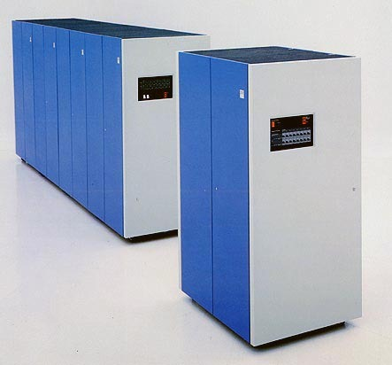

Datos, datos, datos...
En 1980 IBM introdujo estos dispositivos de almacenamiento de aproximadamente 2.5 Gigabytes:

Si mal no recuerdo vi algún “refrigerador” parecido a estos en la sala de servidores del CEC en la Escuela de Ingeniería cuando estudiaba.
Ya para 1987 este modelito más compacto tenía la asombrosa capacidad de almacenar 7.5 Gigabytes:
Hoy en día, tan solo 24 años después, contamos con dispositivos como este:
Con una capacidad de 1 Terabyte, unas 134 veces más capacidad que , en la palma de la mano.
Asombroso ¿verdad?
Dado que tenemos esta capacidad de almacenamiento de información, a costos cada vez menores, es lógico que lo que queremos hacer es mejorar nuestra capacidad de realizar análisis de datos.
¿Qué pasa si queremos hacer análisis de series de tiempo, predicciones, que agrupan información de manera secuencial, donde el orden es importante? El tipo de análisis que responde preguntas del tipo ¿qué pasó?, ¿por qué pasó?, ¿que pasará después?
El almacenamiento no resuelve este problema, sino del software que es capaz de usar esa capacidad en forma inteligente. La respuesta tradicional de un ingeniero de software actual será: “almacene la información en una base de datos relacional, porque de ese modo podrá hacer análisis de esta información en forma eficiente y segura”.
Pero las cosas no son tan simples.
Un ejercicio de análisis de información
No se cuanta información se recopilará en el próximo censo de población de 2012, pero supongamos que se capturaran sólo las siguientes variables: sexo, edad, región, nivel de escolaridad.
El sexo se puede almacenar en 1 bit, la edad en 7 (asumamos que nadie vive más de 127 años), las regiones son 16, por lo que se almacena en 4 bits. El nivel de escolaridad va desde 0 a 12 para la escolaridad completa garantizada en nuestra constitución, digamos que 13 indica educación técnico profesional, 14 universitaria y 15 un nivel de postgrado, todo eso se puede almacenar en 4 bits. Así que un esquema sencillo para almacenar estas variables del censo de Chile 2012 es este:
sexo: 1 bit edad: 7 bits
región: 4 bits
escolaridad: 4bits
Total: 16 bits, 2 bytes
Reservemos 20 millones de registros, la información se puede almacenar en menos de 40 mega bytes.Dadas las capacidades de los computadores personales actuales esta información demográfica se puede almacenar en memoria RAM y realizar cálculo simples, como el calculo de la mediana, por ejemplo. En mi pc un programa en C++ (de unas 70 líneas de código) que calcula la mediana de edad por región toma unos 200 milisegundos.
Se puede almacenar estos 20 millones de registros en una base de datos relacional, en mi caso usé SQL Expresss, me tomó 2 minutos cargar todos los registros desde un archivo CSV.
Calcular la media de la edad es, en términos de programación, mucho más simple, basta este simple query SQL:
select region, sexo, avg(edad) from datos_censo
group by region, sexo
order by sexo, region
Este cálculo toma 7 segundos, unas 30 veces más tiempo que mi programa en C++. Claro que la media no es lo mismo que la mediana. Lamentablemente Transact-sql no tiene una función mediana, así que para hacer lo mismo que mi programa en c hay que escribir una fea sentencia sql1.
Todos estos ejercicios han sido con una base de datos muy simple, y con apenas 3 variables. Si el censo midiera unas 200 variables, y usáramos 2 bytes por cada valor posible, toda la información del censo ocuparía unos 7,5 Gb de información. La información del censo podría procesarse en un notebook.
La realidad no es tan sencilla, porque el gran problema es recolectar la información, digitarla, en forma distribuida en centros de acopio de información, desde distintas partes del país, con cientos de censistas que deberán ingresar los datos, etc. Todo esto requerirá una infraestructura adecuada, con sistemas de respaldo, seguramente se publicará en línea, se alojará en un centro de datos, y mantener esta infraestructura tendrá un extravagante costo calculado por las enigmáticas calculadoras de los ejecutivos comerciales del datacenter.
Probablemente el equipo informático del censo creará un bonito modelo relacional que permita ordenar la información tratando de que esta mantenga al menos la tercera forma normal, para poder mejorar los tiempos de transacción al ingresar la información (aparte de los datos del censo se requieren datos administrativos y de control que permitan garantizar la integridad de la información). Pero después de esas complicaciones, la información puede perfectamente ser vaciada a un vector, una tabla única con un campo por cada variable y unos 20 millones de filas, y puede ser procesado en forma eficiente para calcular una serie de indicadores estadísticos. Me pregunto si lo harán así, o recurrirán a SQL para resolver estos cálculos.
Mientras redactaba este post en mi computador SQL Server trató de de calcular la mediana de la edad de los 20 millones de datos simulados. Les recuerdo que mi programa en C++ se demoró 230 milisegundos, la sentencia SQL fue interrumpida a la media hora, el análisis del plan de ejecución revela que el table scan y el join posterior implicará revisar 400 billones de filas. Agregar índices no solucionará el problema2, y probablemente su impacto será menor. La solución en estos casos es escribir un procedimiento almacenado, o usar un recorrido con cursores para, una tarea de complejidad de programación similar a mi algoritmo en C++, y sospecho con resultados peores en tiempo (el lector podría intentar resolver este problema con otra base de datos relacional, o programar en transact-sql el cálculo de la mediana).
El problema con las bases de datos relacionales
Este es un problema simple, con sólo una tabla, y con una cantidad de datos que no es tan grande para los estándares de nuestros días. Hay aplicaciones que son mucho más grandes. En mi trabajo tenemos bases de datos de cientos de gigabytes de información, que presentan desafíos superiores a este.
El problema es que las bases de datos relacionales son muy eficientes en el procesamiento de operaciones transaccionales, que requieren agregar, insertar, recuperar y modificar una pequeña cantidad de datos de una base de datos más grande.
Imaginen un típico sitio web transaccional de compras, un usuario ingresa al sitio web, se recupera información de la cuenta, se registra datos de la sesión a una bitácora, se buscan productos, se crea una orden de compra, se actualizan los datos del usuario, registro de pago, etc. Miles de operaciones transaccionales, pero cada manejando un subconjunto del total de los datos.
Con el tiempo esta base de datos tendrá miles de millones de registros, y en ese momento el área comercial tendrá la necesidad de hacer análisis de esa información. Al tratar de resolver esas necesidades con SQL nos toparemos con problemas similares a los que enfrenté con mi pequeño ejercicio de datos del censo. Estamos ante el tradicional cambio de enfoque, pasamos del mundo transaccional, donde las bases de datos relacionales reinan, al problema del procesamiento masivo (no es lo mismo 1 de 5.000 que 5.000 de 1).
¿Qué significa procesar gran cantidad de datos?
Hace poco resolví un problema similar en mi trabajo. En una parte de un proceso que un grupo de analistas realizaba, se tenía que aplicar el ordenamiento de 70.000 vectores usando Microsoft Excel, el proceso fue construido por ellos porque aún no se cuenta con una aplicación para este servicio. El problema que este ordenamiento toma 4 horas para esos 70.000 vectores, y hay que procesar archivos de hasta 400.000 vectores (sí, se puede hacer con Excel, una máquina grande y mucha paciencia). Reescribir el ordenamiento del vector en C tomó 1 hora, y realiza el cálculo en menos de 1 segundo para los 70.000 vectores, en un pc. El cuello del botella del proceso desapareció.
Hace no muchos años atrás ningún analista de negocios habría intentado resolver este problema con Excel, simplemente no había capacidad, eso se consideraba un problema de envergadura que requería un desarrollo especial del área de informática. En los 90 eso habría sido un problema de big data.
¿Qué es Big Data? Esa es la pregunta que se hace Adam Jacobs en su artículo de 2009 en ACM Queue: “The Patologies of Big Data”. ¿De qué hablamos?¿Gigabyte?, ¿Terabytes?, ¿Petabytes?. Jacobs propone la siguiente meta-definición:
“datos cuyo tamaño nos obliga a mirar más allá de los métodos probados y verdaderos que son frecuentes en ese momento.” En la década de 1980, eran conjuntos de datos tan grandes que se requería de un “mono robótico mueve cintas” que cambiara miles de cintas de entrada y salida. En la década de 1990, tal vez, eran los datos que trascendían los límites de Microsoft Excel y un PC de sobremesa, que requería software de análisis escrito para estaciones de trabajo Unix. Hoy en día, puede significar que los datos son demasiados para ser colocados en una base de datos relacional y analizados con la ayuda de una computadora de escritorio. Paquetes de estadísticas o visualización de datos, para cuyo análisis requiere software de procesamiento paralelo masivo, que se ejecuta en decenas, cientos o incluso miles de servidores.
Esos son los problemas que enfrentamos ahora, nuestros usuarios tienen acceso a hardware con la capacidad de almacenar gran cantidad de datos, capacidades impensables hace sólo dos décadas, lo que requieren es soluciones de software que permitan operar con esos datos en forma eficiente. Ese es el desafío, y las herramientas que el mercado ofrece, o establece como estándares no están a la altura de esta nueva realidad.
Afortunadamente una mezcla de viejas técnicas y algunas innovaciones, más las posibilidades del hardware actual están haciendo posible la construcción de nuevas herramientas que permitan satisfacer estas demandas, eso es algo que vamos a explorar en los siguientes artículos.
-
La sentencia SQL usada está basada en este artículo Statistics in SQL, que corresponde al libro Transact-SQL CookBook de O’Reilly, si algún lector sabe una mejor manera de calcular la mediana con Transact'-SQL su comentario es bienvenido. Esta es la query en cuestion (notar que calcula la mediana general, no agrupada por sexo y edad):
select x.sexo, x.region,x.edad
from datoscenso x, datoscenso y
group by x.sexo, x.region, x.edad
having
sum (case when y.edad <= x.edad then 1 else 0 end) >= (count()+1)/2 and
sum (case when y.edad >= x.edad then 1 else 0 end) >= (count()/2)+1 ↩︎ -
El problema se complica, porque re indexar la base tomó 20 minutos adicionales, y se tuvo que tener cuidado en optimizar los tipos de datos y otras condiciones (como no permitir nulls, y otras optimizaciones en índices). Después de otra media hora de ejecución la sentencia se detuvo con un error de desbordamiento aritmético (¿?), espero que algún dba de SQL Server que lea este post me explique como hacerlo mejor. ↩︎